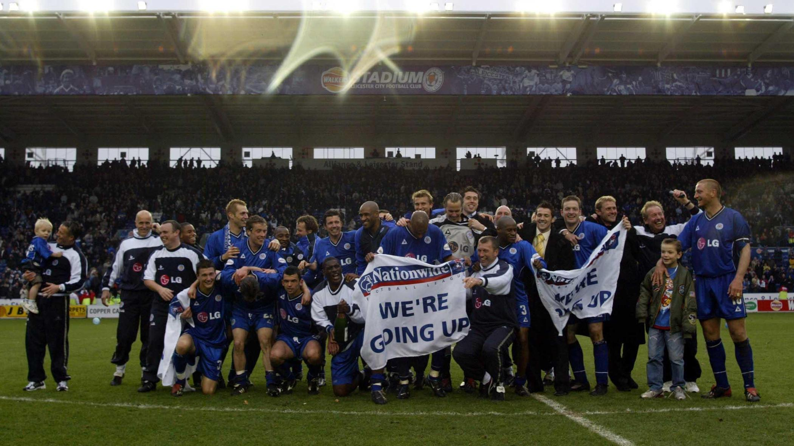
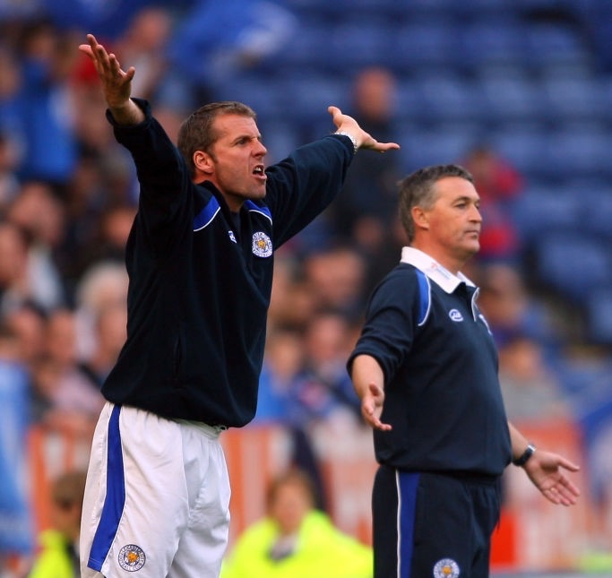
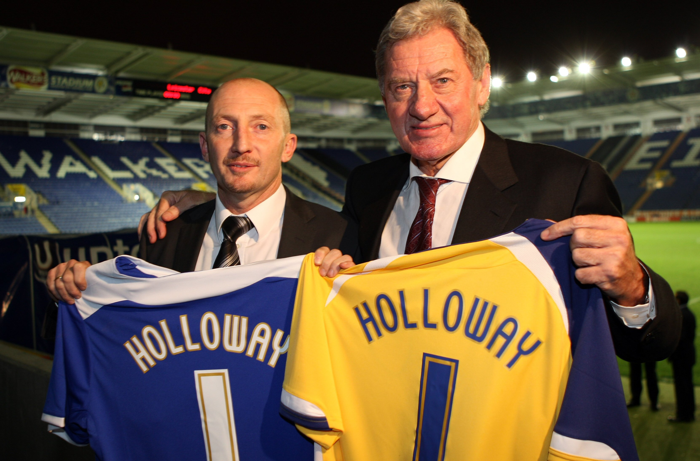
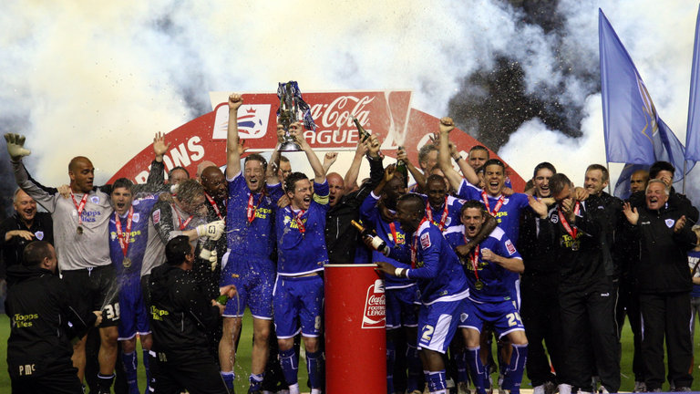
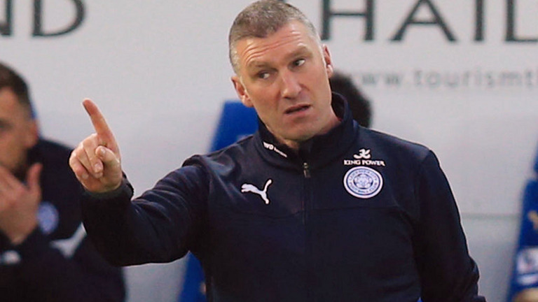
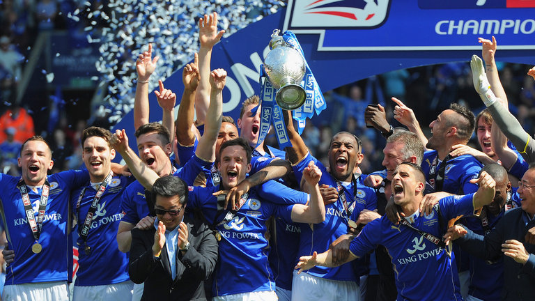
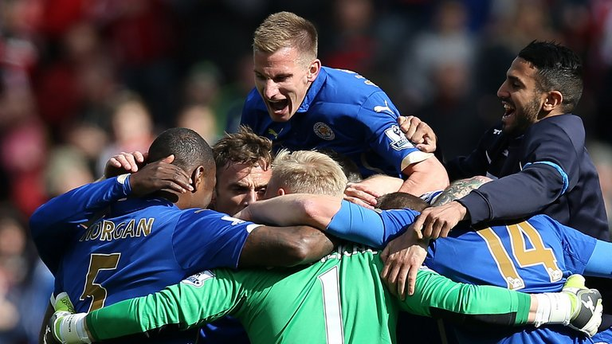
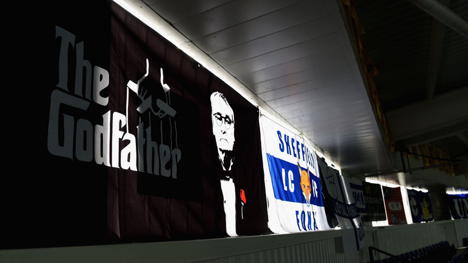

Rise and Fall from the Premier league

Adams guided Leicester to the runners-up spot in Division One and automatic promotion back to the Premier League with more than 90 points. However, Leicester lasted only one season in the top flight and was relegated to the newly labeled Championship, previously known as Division One.
Season 2002-03 & 2003-04A Rough Patch

Adams resigned as manager and Craig Levein was appointed as the boss who proved to be an unsuccessful while his 15 months tenure before being replaced by assistant manager Rob Kelly as the new manager.
Season 2003-04 & 2004-05Further Downfall to the third tier

On 22 November 2006, Ian Holloway was appointed the manager, and he became the first Leicester manager in over 50 years to win his first league match in charge, beating Bristol City 2-0. However, this success did not last, and Leicester was relegated from the Championship at the end of the 2007-08 season. Holloway left by mutual consent after less than a season at the club, being replaced by Nigel Pearson.
Season 2005-06 to 2007-08Back in Action to Division 1 Championship

The 2008-09 campaign was Leicester's first season outside the top two levels of English football. Following relegation to the third tier the previous season, Leicester returned to the Championship at the first attempt in 2008-09, finishing as champions of League One after a 2-0 win at Southend United, with two matches in hand on 18 April 2009.
Season 2008-09Struggling to bring magic back

Leicester's first season back in the Championship was again a successful one under the stewardship of Pearson as the Foxes finished fifth in their first season back in the second tier in 2009-10. Pearson was replaced by Paulo Sousa, who was sacked after just nine league games after a poor start. Sven-Göran Eriksson was announced as his replacement as he guided the club to an eventual tenth-place finish in 2010-11.
Season 2008-09 & 2009-10Rising back to the premier league in 2014 after a ten-year absence

Leicester were favourites for promotion in the 2011–12 season, but on 24 October 2011, following an inconsistent start with the Foxes winning just 5 out of the first 13 games, Eriksson left the club by mutual consent who was replaced by Nigel Pearson. In the 2012–13 season, Leicester struggled with play-off heartbreak as Anthony Knockaert had a 97th-minute penalty saved and Troy Deeney scored immediately at the other end. After an extremely successful 2013–14 season, Leicester finished first in the Championship with 102 points, securing automatic promotion for the 2014–15 Premier League.
Season 2010-11 to 2013-14Survival of the Fittest

Following a miraculous run of seven wins from our final nine games in season 2014-15, City completed the greatest escape ever witnessed in the Premier League with a game to spare to ensure survival before Pearson was sensationally sacked following a disastrous pre-season trip to Thailand.
Season 2014-15A New Manager Again!

Despite Pearson's success, he was sacked in June 2015 after a breakdown in his relationship with the club's owners. He was replaced by former Chelsea manager Claudio Ranieri. Starting the 2015–16 season as relegation candidates, and quoted by William Hill at 5,000–1.
Season 2015-16